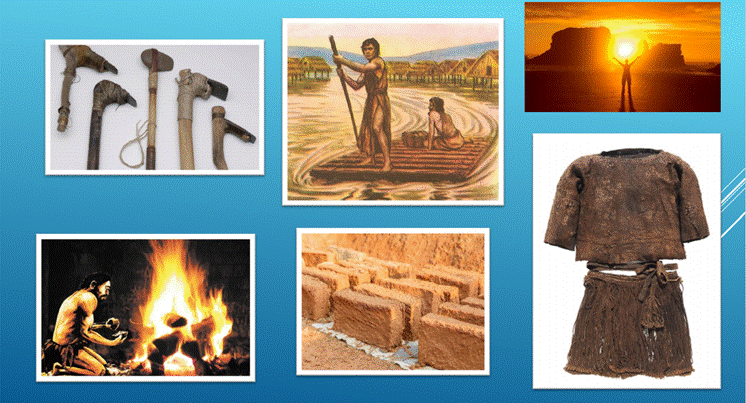
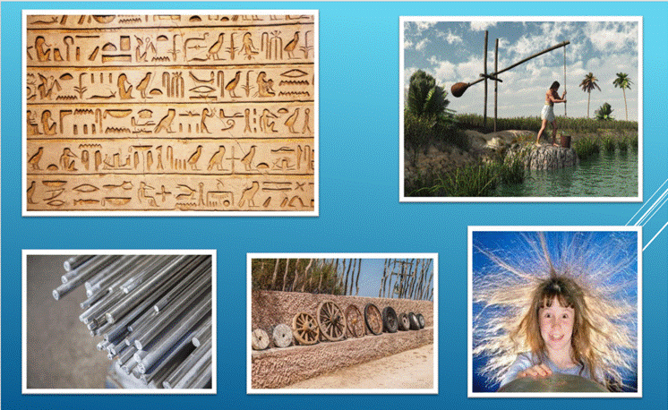
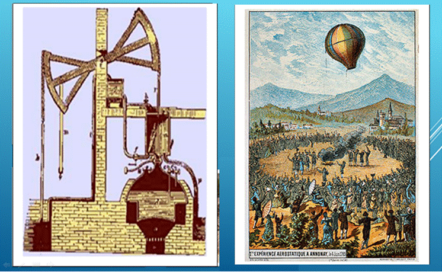
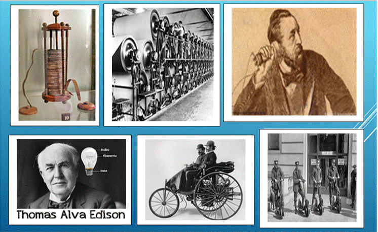
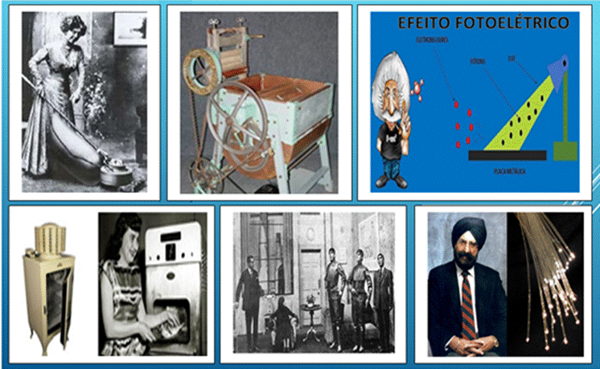
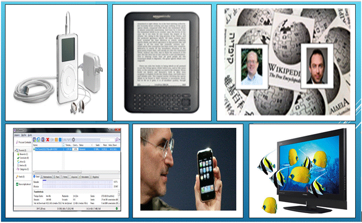

Pré-História
- 4 a 5 bilhões de anos atrás – O Sol começa a produzir energia.
- 10 milhões de anos atrás – Surge as primeiras ferramentas: pedra, madeira e ossos.
- 1 a 2 milhões de anos atrás – Os humanos descobrem o fogo.
- 25.000 a 50.000 a.C – Os humanos usam suas primeiras roupas.
- 10.000 a.C – Os primeiros barcos são construídos.
- 6.000 a 7.000 a.C – Primeiros tijolos feitos a mão são usados nas construções do Oriente Médio.

- 3.500 a 5.000 a.C – O vidro é usado por humanos pela primeira vez.
- 3.500 a.C – Humanos inventam a roda.
- 3.000 a.C – As primeiras línguas são desenvolvidas pelos povos do sul da Mesopotâmia.
- 2.000 a.C – Foi inventado o Shaduf, aparelho de irrigação elaborado pelos egípcios que tinha como finalidade levantar coisas usando contrapesos.
- 1.700 a.C – Surgimento do alfabeto semítico setentrional.
- 1.000 a.C – O ferro é muito utilizado para fabricar ferramentas e armas em todas as partes do mundo.
- 600 a.C – Tales de Mileto descobre a eletricidade estática.

Século XVIII
- 1712 – Thomas Newcomen desenvolve o motor a vapor.
- 1783 – Os irmão Joseph-Michel Montgolfier e Jacques-Étienne Montgolfier inventam o balão de ar quente.

Século XIX
- 1800 – Alessandro Volta faz a primeira bateria (conhecida como Pilha Voltaica).
- 1803 – Henry e Sealy Fourdrinier desenvolvem a máquina de fabricar papel.
- 1876 – Alexander Graham Bell patenteia o telefone, embora a verdadeira propriedade da invenção ainda seja controversa até hoje.
- 1880 – Thomas Edison patenteia a moderna lâmpada elétrica incandescente.
- 1885 – Karl Benz constrói um carro com motor a gasolina.
- 1895 – O americano Ogden Bolton Jr. inventa a bicicleta elétrica.


Século XX
- 1901 – O primeiro aspirador elétrico é desenvolvido.
- 1905 – Albert Einstein explica o efeito fotoelétrico.
- 1907 – Alva Fisher inventa a máquina de lavar roupas elétrica..
- 1921 – Karel Capek e seu irmão inventaram a palavra “robô” em uma peça sobre humanos artificiais.
- 1928 – A geladeira elétrica é inventada.
- Anos 50 – Percy Spencer acidentalmente descobre como cozinhar com micro-ondas, involuntariamente inventando o forno de micro-ondas.
- 1954 – O físico indiano Narinder Kapany é pioneiro em fibra ótica.
SÉCULO XXI
- 2001 – A Apple revoluciona o mundo da música ao revelar o seu leitor de música iPod MP3.
- 2001 – A enciclopédia online Wikipedia é fundada por Larry Sanger e Jimmy Wales.
- 2001 – Bram Cohen desenvolve o compartilhamento de arquivos BitTorrent.
- 2007 – A Amazon.com lança seu leitor de livros eletrônicos (e-books) Kindle.
- 2007 – A Apple apresenta um celular touchscreen chamado iPhone.
- 2010 – A TV 3D começa a ficar mais amplamente disponível.